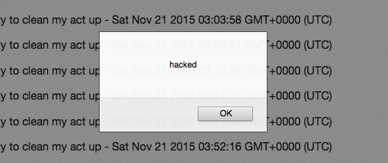
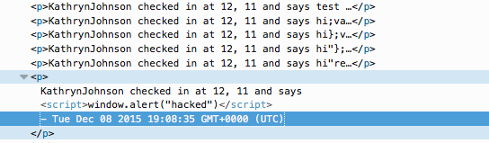

Security Assement of Mapchat API
Introduction
This assment discuss and analyzes the secruity of the server for the Map Chat application devloped by Bruno Olmedo Quiroga. He was tasked with producing a workable serve to manage requests for an application that would display a message and location for user on a map. The users could view their locations through the mapchat application and the API could be used to view all user data at the root as well as the latest data for a given user and, of course, to POST the data to the server. This document indetifies the security vulnerablity apparnt in the server and the application.
Methodology
The testing was originally carried wout with a black box method using curl to send HTTP requests to the server in an attempt to search for vurnerablities. I then examined the code to look for any other possible security exploits and even added some log statements to the server to help for testing.
Abstract of Findings
As expected, many of the security vurnability came from being too trusting of the user. None of the inputs were santaized on the server exposing the server to numerous possible malicious attacks. Vulnerabilities allow the user to crash the webiste, insert malicious data, or see hidden data.
Issues Found
- Cross-Site Scripiting
- Affects root
- Severitiy: High- this vurnuablity exposes any user of the MapChat application or the root of the page to malicious code inject by a third party. All users of the API will be effected unless they santize the reponse themselves.
- Data included in a POST request can be used to send malicious scripts to the server. Although the login field verified, all other fields of the post request including lat, lng, and message are open to any chracters. Thus, a malicious user could insert a <script> and perform an attak on the user:/li>


-
This issue could easily be resolved by escaping special characters in user input before it's entered into the databased. Characters such as "<" and ">" could be escaped to their HTML code equivalents. Using db.update() would allow the client to go through the database to fix any problemtic existing entries.
- Queries allow access to other user's data
- Affects the GET /latest.json API
-
Severity: Low- the application itself allows one to see every other user's location but if ther API were used by another party that attempted to keep the location nof other users secret this would be a problem.
-
The Mongo search takes in the query as part of a parametery for a search allowing a malicious attacker to add items such $ne to the query for malicious purposes. If the /latest.json were used by another application, this could be used to find another user's location data and perhaps even stalk users. EX: /lastest.json?login[$ne]=KathrynJohnson.
- To resolve this issue the client could simply escape any special characters such as '$' before searching the databased with the query.
- Server crash through invalid queries on Mongo
-
Severity: High- An attacker could quickly and easily crash the server from a browser window.
-
The attacker could also crash the server by excuting some nonesense request since the query checks for null data but not undefined data. EX: /latest.json?login[$where]=nonesense will crash the server if entered into the browser. The $where operater can also be used to excute limited javascript on the database which can be used to lock the server or look up sensistive data.
-
The client could resolve this security issue by escaping any special characters as in the two cases above.
Conclusion
The issues with the Map Chat API were as expected, the server trusted the user and did not santize any of the input. These issues ultimately resulted in a server that left itself open to simple attacks. Future considerations could include distributing keys to trusted aplictions that wish to use this API so the normal end user cannot simply access other usere's data through a query to latest.json. Location data is especially sensitive informationa nd in the wrong hands can directly effect the offline lives of indivudals. Addeding in this guarded structure as well as santizing input would cost approximately $400, which could greatly increase the personal safety of your users.